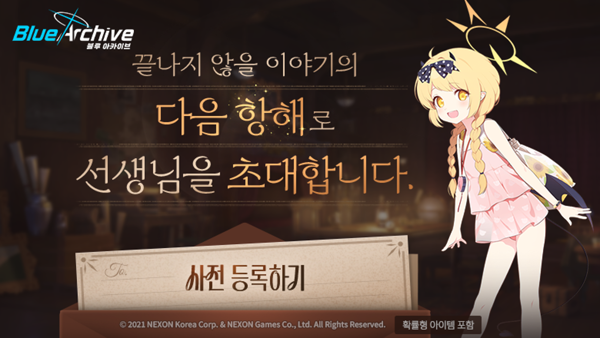

블루 아카이브 5주년 사전등록 로드맵, 11월 9일 마감 보상 3종
블루 아카이브 한국 서버 5주년 사전등록이 11월 3일에 열렸어요. 같은 날 오후 2시에 업데이트 로드맵 특별 페이지 '찬란한 항해'도 공개됐는데요, 공지와 사전등록 페이지를 읽어 보니 지금 당장 챙길 일은 딱 하나더라고요. 11월 9일(월) 23시 59분 전에 사전등록을 눌러 두는 것이에요.
결론부터 말씀드리면 보상은 10회 모집 티켓과 전술 교육 BD 선택 상자, 기술 노트 선택 상자까지 크게 3종이에요. 날짜별 로드맵도 공식 특별 페이지에 올라와 있어서 이 글에 같이 정리했답니다.
사전등록은 언제까지 하고 보상은 뭘 받나요?
사전등록은 2026년 11월 3일(화)부터 11월 9일(월) 23시 59분까지이고, 받는 보상은 10회 모집 티켓 1개와 두 종류의 선택 상자예요.
참여는 공식 특별 페이지 HOME의 '선실 입장' 버튼으로 들어가서 항해 준비 칸의 '사전 등록'을 누르면 돼요. 14세 이상만 참여할 수 있고, 휴대폰 번호 인증을 거치며, 넥슨코리아 전 게임·서비스 프로모션 문자 수신 동의가 함께 들어가니 그 점은 알고 누르시는 게 좋겠어요.

'사전 등록하기' 버튼이 달린 5주년 안내 배너, 특별 페이지 입구 분위기가 이래요
이미지 출처: 블루 아카이브 공식 포럼 공지 · © NEXON Korea Corp. & NEXON Games Co., Ltd.
보상 수량은 아래 표처럼 등급마다 달라요.
| 보상 | 기초 | 일반 | 상급 |
|---|---|---|---|
| 10회 모집 티켓 | 1개 | ||
| 전술 교육 BD 선택 상자 | 20개 | 15개 | 10개 |
| 기술 노트 선택 상자 | 25개 | 20개 | 15개 |
상세 지급 방법과 시기는 '추후 공지'라고 적혀 있어서, 언제 들어오는지는 공지가 더 나와야 알 수 있어요.
특별 페이지 '찬란한 항해'는 어떻게 구성돼 있나요?
'찬란한 항해'는 11월 3일 오후 2시에 열린 5주년 전용 페이지예요. 지금 열린 칸은 6개이고, 특별 선물·성장 지원·선생님의 메시지·콜라보·특별 콘텐츠는 추후 개별 공개된답니다.
- 항해 준비: 위에서 말씀드린 '사전 등록' 창구예요
- 학생 소개: 11~12월 픽업 스케줄과 학생별 상세가 들어 있어요
- 스토리&이벤트: '출항! 만마선 ~마코토 의장님의 화려한 피서~' 이벤트 스토리와 2부 메인 스토리 'Vol.1 불꽃과 그림자 편' 등이 올라와 있네요
- 키보토스 라이브: 11월 8일 '5주년 특별 생방송' 안내와 다시 시청이 모이는 곳이죠
- 5주년 페스티벌: 오프라인 행사를 소개해 줘요
- 디지털 굿즈: 5주년 기념 디지털 굿즈 칸이에요
HOME 화면에서 '선실 입장'을 누르면 열린 칸들이 펼쳐져요
날짜별 상세가 들어 있는 학생 소개와 스토리&이벤트 칸은 아래 로드맵 절에서 표로 풀어 둘게요.
11월 3일부터 10일까지는 어떤 일정이 이어지나요?
사전등록 마감 직전인 11월 7~8일에 킨텍스 페스티벌과 키보토스 라이브가 몰려 있고, 11월 10일 D-Day에 픽업이 바뀝니다.
| 날짜 | 일정 |
|---|---|
| 11/3(화) 11:00 ~ 11/10(화) 10:59 | 특별 복각 및 일반 픽업 (공식 예고 기준) |
| 11/7(토) ~ 11/8(일) | 킨텍스 5주년 페스티벌 |
| 11/7(토)·11/8(일) 낮 12시 | 5주년 특별 생방송 (공식 유튜브) |
| 11/8(일) 14:00 · 16:00 | 5주년 키보토스 라이브 1부 · 2부 |
| 11/9(월) 23:59 | 사전등록 마감 |
| 11/10(화) | 5주년 D-Day, 새 픽업과 2부 메인 스토리 시작 |
지금 열려 있는 픽업은 ★3 마코토와 ★3 아코(드레스) 특별 복각, 그리고 ★3 사츠키·치아키·칸나(수영복) 일반 픽업이고 모집포인트 방식이에요.
페스티벌은 킨텍스 제2전시장 9홀에서 열리고 양일 합쳐 1만 2천 명을 초청하는 규모이며, 처음 도입한 '패스트트랙'은 총력전 등급이나 인연 랭크 같은 플레이 기록이 높은 분을 먼저 입장시키는 방식이라고 해요. 초청 방식과 입장 안내는 공식 커뮤니티 공지를 참고해 주세요. 현장 구성은 이렇게 소개됐어요.
- 총력전 보스 대형 조형물 포토존과 미니게임존
- 공식 상품점 '샬레 스토어'와 팬 창작 '키보토스 마켓'(97개 팀)
- 11/7·11/8 양일 메인 무대 '사운드 아카이브'에서 OST 밴드와 DJ 공연
- 코스프레 퍼포먼스와 퀴즈쇼, 그리고 개발자 코멘터리(11/7 19:00 온라인 1부, 11/8 15:00 2부)
키보토스 라이브는 11월 8일 킨텍스 현장에서 1부 14:00, 2부 16:00에 실시간으로 진행되고, 향후 업데이트 방향이 여기서 공개돼요. 5주년 기념 성장 지원 내용도 이 방송에서 풀린다고 하니, 라이브 뒤에 공식 페이지를 한 번 더 열어 보세요.
11월 10일 점검 뒤에는 모집포인트가 '모집스택' 방식으로 바뀐다는 사전 안내가 돌고 있어요. 다만 세부 수치는 11월 10일 점검 공지에서 직접 확인하시는 게 가장 정확해요.
11월 10일부터 24일까지 공식 로드맵에는 뭐가 있나요?
공식 특별 페이지에 날짜가 적혀 있는 것만 추렸어요. 11월 10일은 챙길 게 한꺼번에 몰려서 제일 바쁜 날이네요.
| 날짜 | 스토리·콘텐츠 | 픽업 학생 |
|---|---|---|
| 11/10(화) | 메인 'Vol.1 불꽃과 그림자 편', 이벤트 스토리 '출항! 만마선 ~마코토 의장님의 화려한 피서~', 미니 이벤트 '천하게일·무술대회' | 마코토(수영복), 사츠키(수영복), 치아키(수영복) |
| 11/11(수) | 제약해제결전 '세트의 분노(경장갑)' | - |
| 11/17(화) | - | 이로하(수영복), 이부키(수영복), 리오, 네루(교복) |
| 11/24(화) | 이벤트 스토리 복각 '팬데믹 해저드 ~기적의 팬케이크~', 종합전술시험 '호위 시험' | 세나(사복), 주리(아르바이트), 나구사, 니야 |
아직 공개 전이라 확실하게 말씀드릴 수 없는 건 이런 것들이에요.
- 이벤트 스토리 종료일과 11월 10일 점검 시간
- 12월 이후 픽업, 특별 선물 지급 일정, 5주년 기념 성장 지원 보상(11월 8일 공개 예정)
- 메이플스토리 X 블루 아카이브 콜라보, '출항! 만마선' PV 같은 특별 콘텐츠, 개발자 코멘터리 출연자
공개되는 대로 이 글을 고쳐 둘게요.
자주 묻는 질문
Q. 문자 수신 동의는 나중에 철회할 수 있나요?
사전등록에 포함된 프로모션 문자 수신 동의는 고객센터를 통해 철회할 수 있다고 공지에 적혀 있어요.
Q. 11월 8일 키보토스 라이브를 놓치면 못 보나요?
11월 8일(일) 낮 12시에 시작하는 공식 유튜브 생방송으로 볼 수 있고, 놓쳐도 공식 공지에 다시 시청 안내가 있어서 특별 페이지의 키보토스 라이브 칸에서 볼 수 있다고 해요.
블루 아카이브 5주년 사전등록 정리
순서는 간단해요. 사전등록은 11월 9일 23시 59분 전에 끝내 두고, 11월 10일 로드맵은 공식 특별 페이지에서 보고, 성장 지원은 11월 8일 라이브가 지난 다음에 다시 열어 보면 됩니다. 5주년 항해 즐겁게 시작해 보시길 바랄게요~
✔ 블루 아카이브 같이 보기 좋은 내용
· 무신사 블루아카이브 굿즈 팝업 스토어 예약 방법 PC 소식
· 블루아카이브 이디야 쿠폰 포토카드는 역시 시로코 털자!
· 블루아카이브 맘스터치 쿠폰 필요하신 분?
참고한 곳 (2026.11.03 기준)
· 블루 아카이브 공식 포럼 「5주년 사전 등록 & 업데이트 로드맵 특별 페이지 오픈!」
· 블루 아카이브 공식 특별 페이지 「찬란한 항해」
· 블루 아카이브 공식 포럼 「5주년 페스티벌 무대 이벤트 & 부스 프로그램 안내」
· 인벤글로벌 5주년 페스티벌 보도